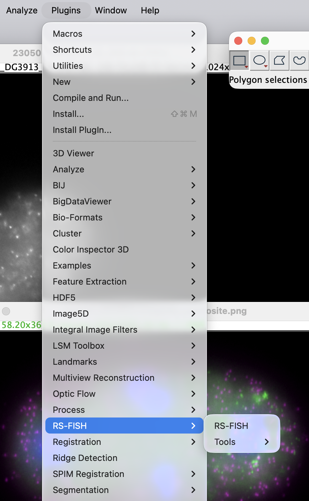
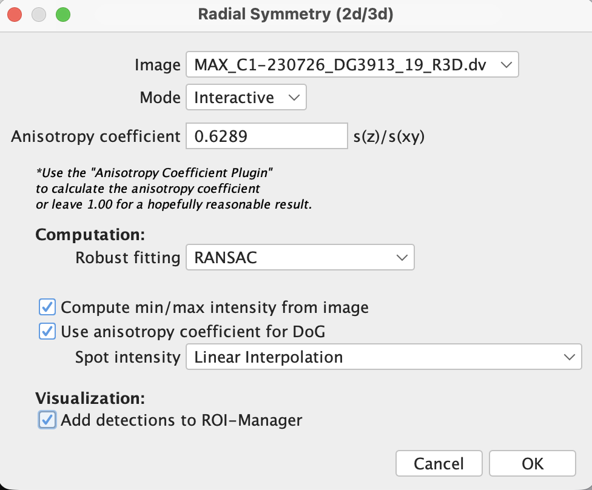
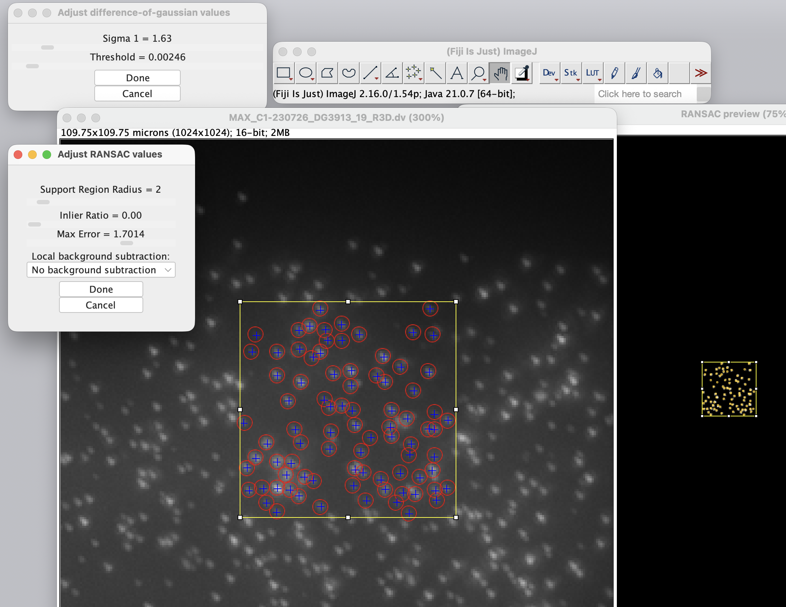
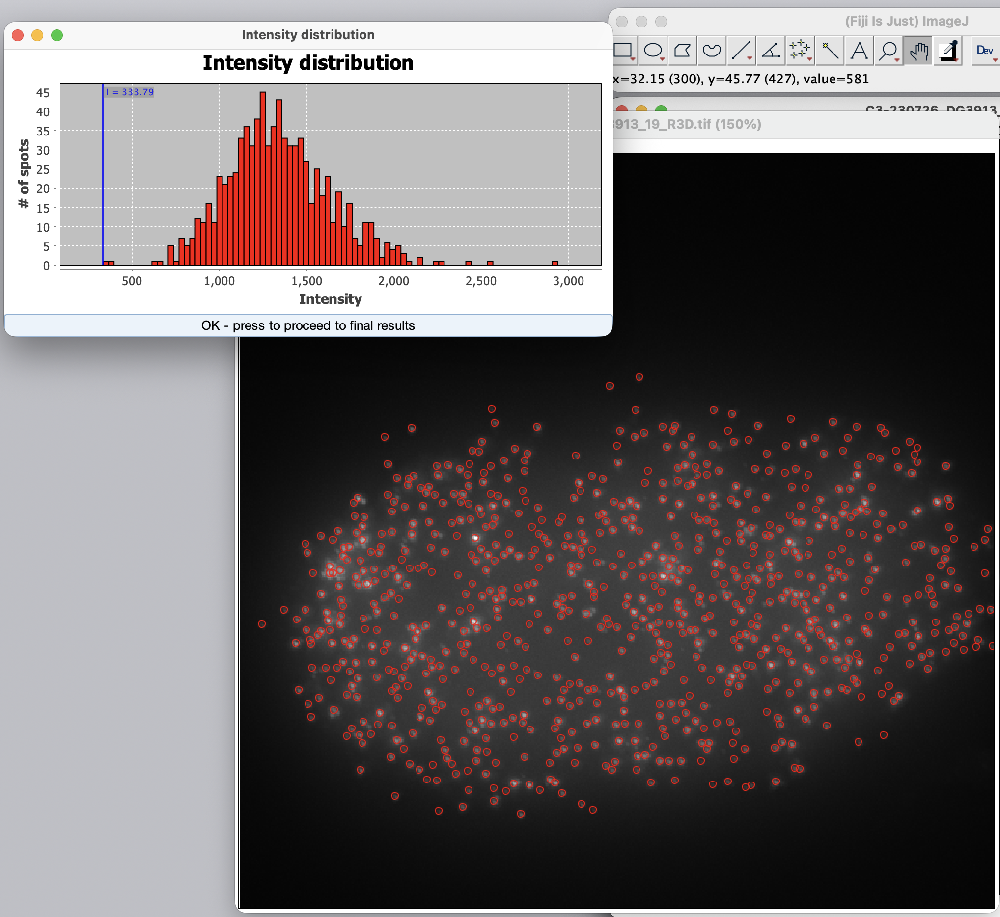
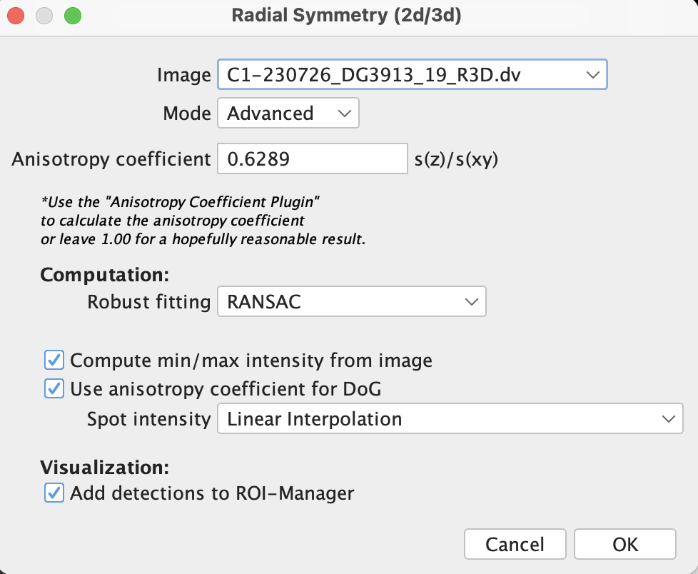
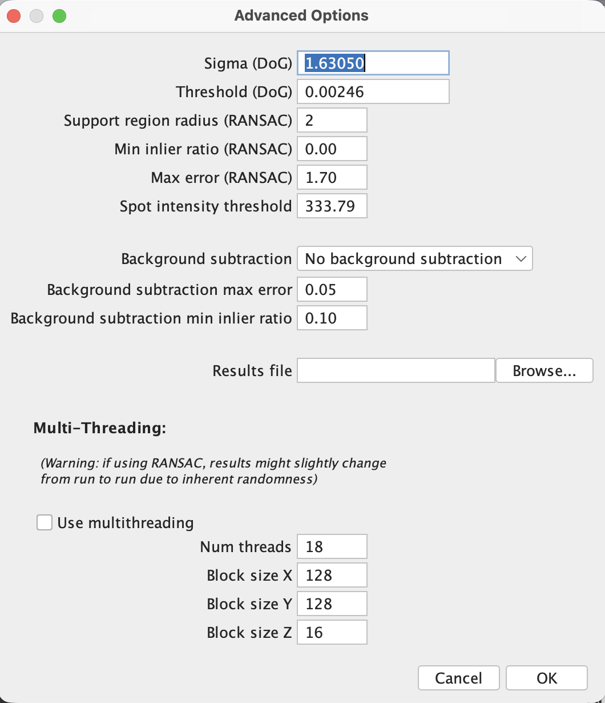
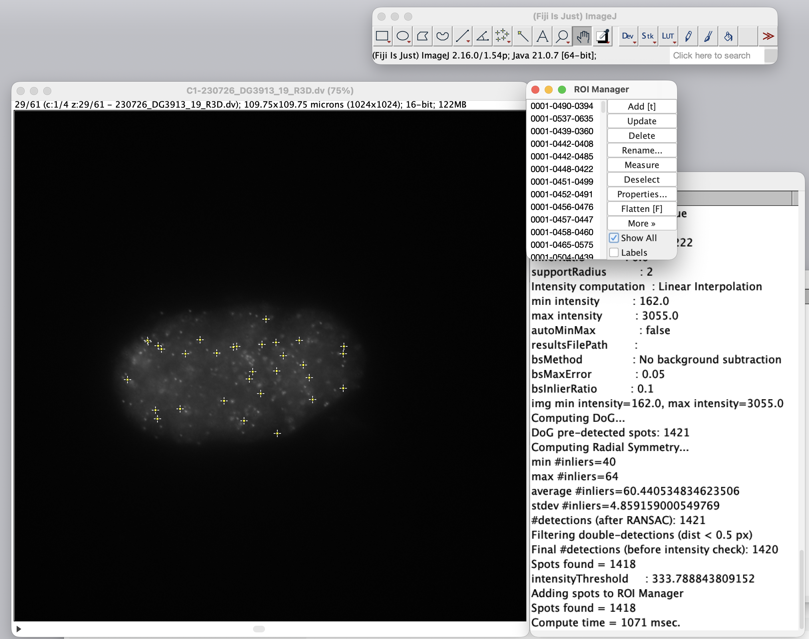
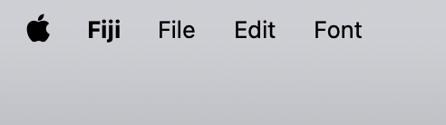
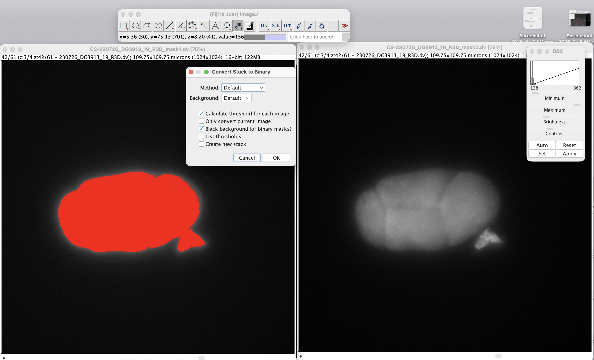
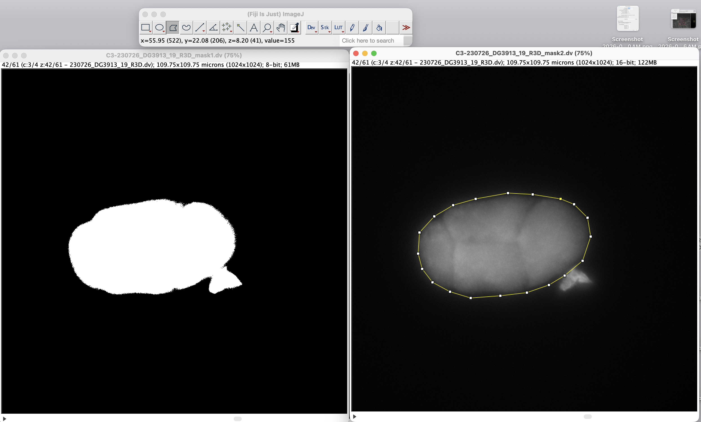

Extending FIJI With Plugins#
References and Resources#
Bahry E, Breimann L, Zouinkhi M, Epstein L, Kolyvanov K, Mamrak N, King B, Long X, Harrington KIS, Lionnet T, Preibisch S. RS-FISH: precise, interactive, fast, and scalable FISH spot detection.. Nat Methods. 2022 Dec;19(12):1563-1567. Epub 2022 Nov 17. PMID: 36396787; PMCID: PMC9718671.
About Plugins#
ImageJ/FIJI is an example of a community-driven, open architecture software ecosystem. Unlike Microsoft that is developed by a company, sold for a price, and generates a profit, ImageJ/FIJI is distributed on an open format (written in JAVA), distributed for free, and depends on the users to extend its functionality. Community members and users can add to ImageJ and distribute their add-ons as Plugins (also called Extensions). These are analogous to Packages in R or Python.
Let’s explore the ImageJ List of Plugins.
In general, Plugins are divided into four categories:
Plugins that come with ImageJ (the most basic download)
Plugins that come with FIJI
Plugings that can be installed through
Update ...Plugins that must be manually installed
Today, we will use the Radial Symmetry Plugin, also called RS-FISH. I tcan be installed through Update ...
Let’s Download and Install RS-FISH#
Go to
Help -> Update ...Click
Mange update sitesType
radial symmetryinto the search barSelect the box to the left of
Radial SymmetryClick
Apply and CloseClick
Apply ChangesRestart FIJI
Check your installation was successful. Go to the
PluginMenu. You should now see the RS-FISH Plugin listed
{kind=link}

The RS-FISH Approach#
RS-FISH uses Raidal Symmetry, Gaussians, and Outlier Removal for Improved mRNA Spot Detection to tackle common issues that arise when detecting and counting puncta.
Common issues, questions, and decisions associated with spot detection:
Can we use a 3D image, or do we need to flatten it to 2D?
How can we resolve spots that are close together? Clusters?
The X and Y dimensions are captured at one resolution, the Z-dimension is captured at a different “resolution”.
Out-of-focus light appears in many Z-stacks. How does this impact the algorithm?
How do we deal with background?
How do we deal with multiple regions of interest in an image?
How will we process files in batch?
RS-FISH Answers
3D and 2D - ok
The Detection of Gaussian algorithm is used to identify spots and resolve spots that are close together (also, working in 3D help).
RANSAC - This is SM-FISH’s Remove Outlier function. The ideas is to improve accuracy.
Multiconsensus RANSAC - This computationally intensive Remove Outlier function that can more accurately resolve densely arranged spots.
Anisotropy Coefficient RS-FISH calculates this coefficient to account for the resolution differences between X, Y, and Z. This virtually corrects for the lower resolution and out-of-focus light in the Z-direction.
Binary masks can be applied to ignore background or select multiple regions-of-interest per image (2 or more embryos per image)
Macros are used to process all files in a directory in batch mode.
The RS-FISH Steps:#
Calculate Anisotropy Coefficient
Determine optimal settings
Detect and Count Spots
Optionally - Filter spots using binary mask(s)
Let’s detect spots with smFISH#
1. Let’s Calculate Anisotropy Coefficient#
Click along with me…
Start Macro Recording. FIJI will record all your clicks, settings, and toggles by recording them. This will convert pushing and clicking into text commands. This will be helpful later as you start to write your own macros.
Select the
PluginsMenu ->Macros->Record
Open
230726_DG3913_19_R3D.dvif it is not open already. (hint - drat & drop into the status bar)Select
Image -> Color -> Split Channelsto split the image into separate channels as RS-FISH can only work on one channel at a time.Select
Plugins -> RS-FISH -> Tools -> Calculate Anisotropy Coefficient.Select Image:
C1-230726_DG3913_19_R3D.dvfrom the pull down menu. Select Detection Mode;Gauss FitMove the rectangle to a place within the embryo that has spots. Use the default Sigma and Threshold values (these typically look pretty good).
You can adjust Sigma to account for larger or smaller spots or Threshold to account for darker or lighter contrast
For now, let’s just use the defaults. Sigma:
1.50. Threshold:0.0050
Select
DoneYou will receive a Anisotropy Coefficient. Write it down or export/save it (your README file is a good place). (Mine was around 0.6288)
2. Let’s determine the optimal settings#
To determine the optimal settings, we’ll use a Z-projection of Channel 1.**#
Click along with me…
Close out all extra windows and panels
Drag and drop
230726_DG3913_19_R3D.dvinto the status bar to openSplit out channels. Select
Image -> Color -> Split ChannelsSelect Channel 1. Select
Window -> C1-230726_DG3913_19_R3D.dvZ-Projection. Select
Image -> Stacks -> Z-ProjectSelect start slice (1) and stop slice (61) and Projection Type:
Max IntensitySet levels. Select
Plugins -> RS-FISH -> RS-FISHSelect the Z-projected Channel 1 Image. Image:
MAX-C1-230726_DG3913_19_R3D.dv. Set the values below:Mode:
InteractiveClick the box to
Add Detections to ROI-Manager
{kind=link}

Organize your windows so that you can see both the MAX-C1 window and the RANSAC preview window.
Place the rectangle within a region with mRNA spots
Zoom in and use the
handtool from the toolkit bar to scootch to a good spotToggle through
Sigma,Threshold,Support region radius,Inlier ratio,Max error. Keep background subtraction off.Make some choices - what looks real to you?
Press any
Done
{kind=link}

Set the intensity threshold#
Some low-intensity spots are not real. You can remove them if you like.
Organize your windows so that you can see both the MAX-C1 window and the Intensity distribution window
Click within the grey shaded plot to move the blue horizontal line
You will see some spots disappear.
Make some choices - which do you think look real?
{kind=link}

Click on OK - press to proceed to final results
3. Let’s detect and count mRNA spots#
We will count spots in both Channel 1 (set-3 mRNA control) and Channel 2 (lin-41 mRNA querry). Make sure you have both of these single-channel multi-stack files C1-230505_DG3913_06_R3D.dv and C2-230505_DG3913_06_R3D.dv.
Click along with me…
Select
Plugins -> RS-FISH -> RS-FISHSelect Image:
C1-230726_DG3913_19_R3D.dvThis time, select Mode:
Advanced. This will auto-propagate the settings you defined in the last exercise.My screen looks like this:
{kind=link}

Click
OKAdvanced Settings Window. You shouldn’t need to change or click anything. Just in case this is helpful, my screen looks like this…
{kind=link}

Click
OK
Assess the results#
We now have an ROI Manager (Region of Interest), a Results List, information in the Log, and our original .dv file.
Check the number of spots detected in the Log file
In the ROI Manager, click on
Show AllSlide through the Z axis of the image file to explore what was counted as a spot
{kind=link}

Save the results#
Save the Results list. This can be a little tricky. Click on the results list until the menu options change to only a list of four menus, like so:
{kind=link}

Save the file in the sub-directory 03_fiji_analysis with a name that makes sense like
260710_ch1_set3_C1-230726_DG3913_19_smFISH_localizations.csvSave the relevant portion of the logfile into a text editor. Save this also to the 03_fiji_analysis subdirectory
Repeat for Channel 2#
Do the same for Channel 2, the lin-41 mRNA channel:
Select
Plugins -> RS-FISH -> RS-FISHThis time, select Image:
C2-230726_DG3913_19_R3D.dvMode:
AdvancedClick
OKClick
OK
The lin-41 mRNA has a different pattern than set-3. Instead of being homogenously distributed, it arranges into clusters. Use Show All to explore how well RS-FISH captured mRNAs found in clusters.
Save the results files here, too:
Save the file in the sub-directory 03_fiji_analysis with a name that makes sense like
260710_ch2_lin-41_C2_230726_DG3913_19_smFISH_localizations.csvSave the relevant portion of the logfile into a text editor. Save this also to the 03_fiji_analysis subdirectory
4. Let’s filter spots using binary mask(s)#
Sometimes, you want to restrict the mRNA spot counting to a small portion of the image. This may be important if there is debris in the prep or multiple embryos in one image.
To do this, we will make a mask, a black-and-white outline of the region we want to quantify versus the region we want to ignore. There are many ways to make a mask. Let’s walk through two possible options for this process.
We can use any of the channels to create the mask. For this process, let’s go ahead and select Channel 3 to make the mask because it is very obvious where the outline of the embryo is.
First, let’s duplicate Channel 3. Click along…
Under the
WindowMenu, select theC3Channel imageTo duplicate, go to
Image -> Duplicate...Name the new image
C3_230726_DG3913_19_R3D_mask1.dvClick to select
Duplicate stackClick
OKRepeat to create
C3_230726_DG3913_19_R3D_mask2.dv
For Option 1, we will use an automated approach to create a dynamic, 3D mask. For Option 2, we will hand draw a boundary that will be constant through all z-stacks.
Option 1 - automated, 3D binary mask#
Select the image
C3_230726_DG3913_19_R3D_mask1.dvSlide through the Z axis until you are in a middle slice.
Select
Process -> Make BinarySelect the following options…
{kind=link}

Press
OKThe red area will convert to white. Slide through the Z-stacks to see how the mask changes with each slice.
To save the mask, go to
File->Save As->Tiff...Save in a masks sub-directory.
Option 2 - hand-drawn, 2D mask#
Select the image
C3_230726_DG3913_19_R3D_mask2.dvFrom the toolbar, select the
PolygontoolDraw an outline around the embryo with the polygon tool. Be sure to connect the starting and ending nodes together to create a shape. It should look like this…
{kind=link}

To make the mask, selct
Edit -> Selection -> Create MaskThis will create a new 2D image file.
Save it in your same masks, sub-directory.
Filter mRNA spot detection by mask#
To use the mask, you must first run mRNA spot detection and then filter out un-masked spots.
Select
Plugins -> RS-FISH -> Tools -> Mask FilteringSelect the directory containing your .csv output files
Select one of your masks
Select an output directory
Push
OK
You should now have a directory with filtered .csv files